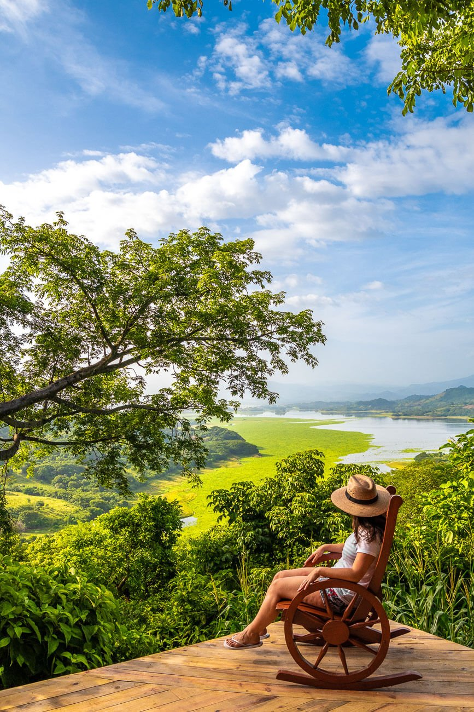
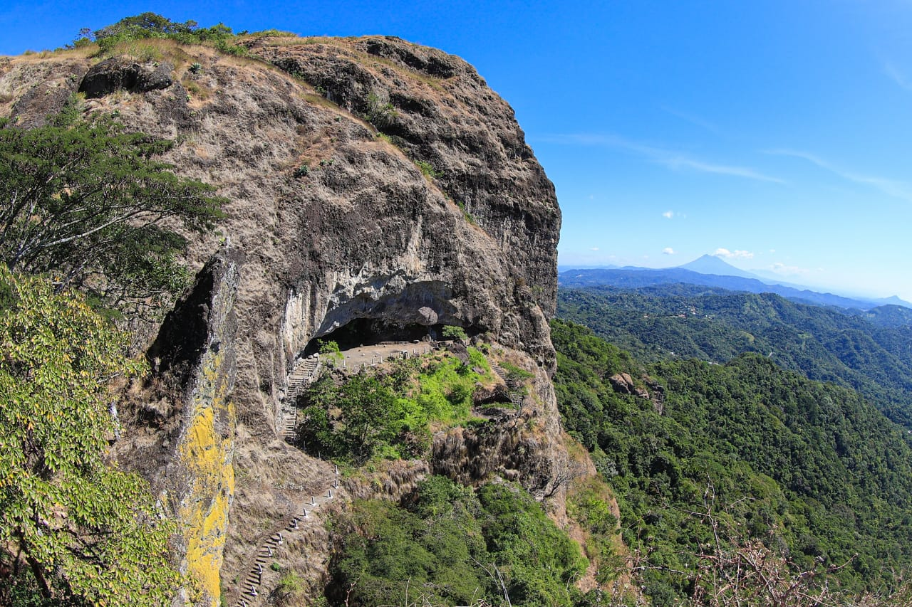
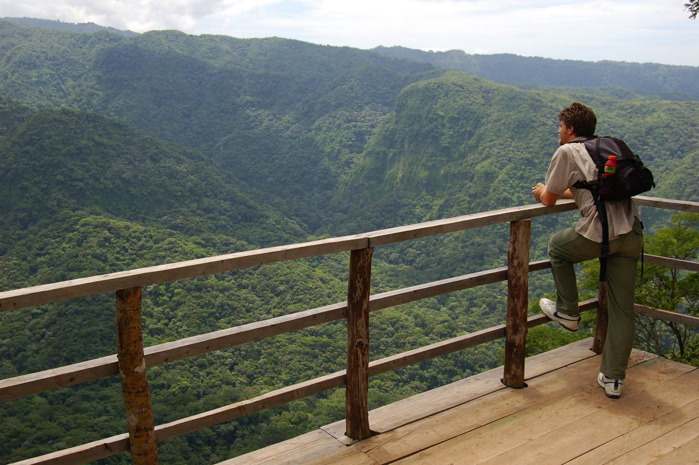

Suchitoto
Suchitoto, ubicado a 47 kilómetros de la capital, es un destino imperdible durante tu visita a El Salvador. Esta ciudad colonial alberga una invaluable riqueza cultural e histórica, la cual se funde con la naturaleza y sus imponentes vistas, haciendo honor a su significado Náhualt "lugar de pájaros y flores".

Si de historia se trata, este destino albergó la primera capital del país en 1528 y su característica es muy visible en la zona, ahora convertida en un bastión turístico rodeado de hostales, restaurantes y cafés pintorescos que dan la sensación de estar en la época colonial.
La Puerta del Diablo
Historia
Existen diversas leyendas que narran su historia, una de ellas cuenta que en tiempos de la colonia la propiedad pertenece a la familia Renderos, de donde proviene el nombre de Los Planes de Renderos.
Continuación...
La hija de la familia, María de la Paz era cortejada por el mismo diablo razón por la cual decidieron cazarlo. Una noche después de haber cortejado a la joven el demonio fue perseguido y al verse atrapado, decidió romper el peñasco para escapar por el medio.

Parque Nacional El Imposible
El Imposible es el parque nacional más grande y con mayor biodiversidad de El Salvador. Situado en las elevaciones costeras del pacífico, en el departamento de Ahuchapán, se abrió al público en 1977.
Durante la primera mitad del siglo XX, los cafetaleros de la zona transportaban su café a lomos de mulas desde las fincas del norte, especialmente las situadas en la localidad de Tacuba, hacia el puerto de Acajutla. En el camino hacia el mar, personas y animales se encontraban con un barranco entre dos montañas que interrumpía el paso.
Continuación...
Para lograr pasar de un lado al otro, los lugareños colocaban troncos de árboles para que las mulas caminaran, pero en no pocas ocasiones estos animales (y también las personas) resbalaban y caían al precipicio. Las solución llegó tras la construcción de un puente de mampostería en el lugar. Allí, una placa recuerda que en el “Año 1968 dejó de ser Imposible”.

Explora más
Etiam faucibus nulla vitae arcu ultricies cursus ac eu tellus.Mauris bibendum consectetur lectus ut molestie. Nunc ornare acus augue. Vestibulum ultricies magna in vestibulum pulvinar.
Inicio